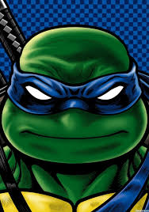

Лидер команды. Самый опытный ниндзя из братьев. Цвет повязки синий, его оружие — две катаны.Выглядит как зеленая черепаха мутант. По сравнению с братьями среднего роста. Носит синюю бандану, и использует два меча-катаны. Глаза синие. Характер самый уравновешенный по сравнению с Микки и Рафом. Обычно старается быть примерным лидером, расстраиваясь, что братья его не слушаются. Любит смотреть шоу Космические герои, подражая своему кумиру Капитану Райану, но Раф не любит этот мультик, дразня Лео. Первая любовь Карай. Имеет дар целителя. В середине 5 сезона, после повторной мутации, выглядит как гигантская человеко-черепаха которая перекачена мутаген, напоминая Супер-Шреддера. От панциря осталось лишь искаженное костное покрытие на спине пронизанное мутагенными венами. Носит кожаные ремни с шипами, черные сапоги с синими штанами и шлем, напоминающий ведро, которое сломал Рафаэль.
Леонардо и его братья когда-то были обычными черепашками. Хамато Йоши, он же их будущий сенсей, купил четырёх черепашек и забрал с собой. По пути из магазина Йоши увидел несколько людей в переулке, Крэнгов, в их руках было нечто странное и он проследовал за кренгами. К сожалению, Йоши попал врасплох, когда он случайно наступил на хвост уличной крысы. Крэнги обнаружили и попытались убить его, но Йоши смог постоять за себя. В ходе драки один из Крэнгов случайно уронил канистру с Мутагеном, которую они держали, в результате чего черепахи и Йоши мутировали. Йоши, в гуманоидную коричневую крысу по имени «Сплинтер», а Лео и его братья, после контакта со Сплинтером, когда он был человеком, мутировали в гуманоидных черепах. Сплинтер знал, что они никогда не будут приняты в их городском обществе, поэтому он прятался от людей, которые не могли их понять, находя еду на помойке и пряча черепашек на крыше. Однажды их обнаружили Крэнги, и им пришлось уходить под железнодорожный мост, но их нашли Крэнги, и уйдя от них, Сплинтер нашел новое место в подвале. Дальше хотя медитировать, что ему не удалось подумал, что стоит назвать черепах, и назвал их всех в честь художников эпохи возрождения, дав имя Леонардо. Дальше пришлось уходить из за того, что из опять обнаружили Крэнги, и Сплинтер увёз их в метро. Дальше через метро Сплинтер ушёл в канализацию, для того чтобы воспитать черепашек, как своих детей, и передать им то, чего умеет сам для того, чтобы защитить их от того мира, в который им однажды придётся выйти. Дальше Сплинтер переосмыслил жизнь и сразился с Крэнгами, и спас черепах уплыв вместе с ними. Дальше очнувшись, Сплинтер обнаружил, что они приплыли в новое место, где стал домом для них всех. Дальше Сплинтер, обустроил его и начал обучение черепах. В 1 сезоне Леонардо был выбран лидером для того, чтобы ввести свою команду.
В отличие от братьев, самого среднего роста и имеет самого среднего размера концы банданы. В отличие от братьев, имя Леонардо не переводится как Дар Божьий или Подобен Богу, как у Рафаэля, Доннателло и Микиланджело. Его имя переводится как Сильный Лев. Единственный среди братьев кто не имел домашних животных. Хотя в 2 сезоне 24 серии, хотел взять существо из Измерения Икс, но оно оказалось чудовищем. Лео правша. После повторной мутации, стал напоминать Супер-Шреддера, но в отличие от него, у Лео не было металлических шипов Самое любимое шоу это Косимическе Герои, где главный герой Капитан Райан, которому Лео подражает и ставит как пример для себя. В отличие от братьев, носит самые светлые повязки. Если посмотреть Серию "Owari", в конце, когда Лео держит голову шреддера, в его образе можно найти ошибку, его повязка черного цвета, но его конец остался синим. Отчасти Лео влюбился в мутанта, так как Карай наполовину змея-мутант.
Подобно вступительным заявлениям, он является лидером команды и выполняет свои обязанности, которые иногда беспокоят его братьев, особенно Рафа. Лео самый серьезный и дисциплинированный из всех черепах и конечно поэтому их лидер. На его руках лежит большая ответственность, которая иногда может ошеломить его. В целом, Лео выступает в роли старшего брата для черепах и в качестве старшего сын для Мастера Сплинтера.Он был выбран в качестве лидера из-за его готовности, а не из-за его мастерства. Лео - самый зрелый из всех своих братьев, всегда ведущий себя как воспитатель для своих братьев. Он очень защищает своих братьев, сестру (Караи) Миву и подругу Эйприл, он готов на многое ради каждого из них. Лео большой фанат «Космических героев» и старается быть похожим на главного героя Капитана Райана, но Раф, считает, что это глупый сериал и Леонардо только зря тратит на него своё время. Лео частенько цитирует Капитана, чем очень сильно раздражает Рафа.Леонардо владеет достаточно важными качествами лидера: мудрость, целеустремленность, ораторские способности, тактичность, хитрость и огромное сердце. Лео делает все возможное, чтобы возглавить команду, но иногда его терзают сомнения сможет ли он стать сенсеем и быть опорой для остальных, ведь это большая ответственность.